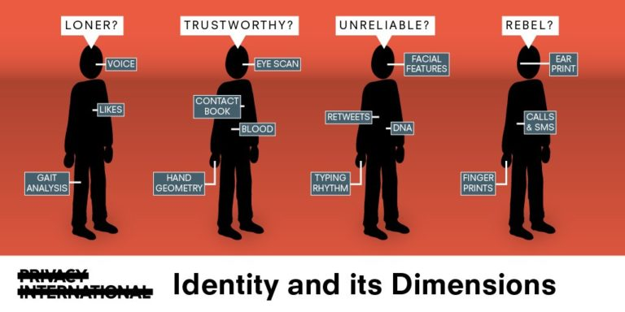

How to Protect Your Privacy Online: Essential Tools and Strategies
By: Sofia
Introduction
Privacy is becoming a top concern for internet users worldwide. With cyber threats and attacks on the rise, it's vital to understand how to protect your privacy online. In this article, we'll explore essential tools and strategies that will help you safeguard your digital life.
Gone are the days when your online activity went unnoticed. Advertisers track you across the web, social media platforms collect your data, and cybercriminals can steal your personal information without your knowledge. The path to protecting your privacy online is not an easy one, but it's not impossible either.
The key is to take proactive steps to ensure that your online activities remain secure and private. Some of the tools and strategies we'll cover include browser extensions, virtual private networks (VPNs), password managers, and two-factor authentication. We'll also look at tips for creating strong passwords, avoiding phishing attacks, and keeping your social media accounts secure.
Protecting your online privacy can seem like a daunting task. However, by following the right steps and using the right tools, you'll be able to maintain your privacy and security online. With our comprehensive guide, you'll be able to navigate the confusing world of online privacy and enjoy a safe and secure surfing experience. So, let's dive in and discover how to protect your privacy online.
ad space
Use a VPN
Amidst the ever-increasing concerns over online privacy and data security, virtual private networks (VPNs) have emerged as powerful tools for protecting sensitive information online. But what exactly is a VPN, and why is it crucial in safeguarding your online privacy?
In simple terms, a VPN is a service that creates a secure, encrypted connection between your device and the internet. By connecting to a VPN server, your web traffic is routed through a private network, making it difficult for anyone - including your Internet Service Provider (ISP), government agencies, or hackers - to monitor, intercept, or steal your online data.
Using a VPN has numerous benefits apart from improving your online privacy. For example, it allows you to access geo-restricted content or websites that your ISP might be blocking, enhancing your online freedom. A VPN also shields your online activity from advertisers who are notorious for tracking your behavior and harvesting your data for targeted advertising.
When selecting a VPN service, it's crucial to consider its privacy policies, protocols, security features, and compatibility with your devices. Additionally, you should evaluate its speed, reliability, and server coverage to ensure that you get the best possible experience.
In conclusion, a VPN is a critical tool for safeguarding your online privacy, enhancing your security, and increasing your online freedom. It can help you surf the web anonymously, access restricted content, and maintain your digital privacy while using public Wi-Fi networks. With the increasing prevalence of cyber threats, using a VPN is no longer an option but a necessity for anyone who values their online privacy.
ad space
Be Cautious with Your Personal Information
In a world where everything is digital and accessible with a click of a button, protecting your privacy is more important than ever. Your personal information is valuable, and cybercriminals are becoming increasingly sophisticated in their attempts to steal it. Being cautious with your personal information is a critical first step in protecting yourself online.
To start, it's essential to limit how much personal information you share online. Avoid sharing your full name, birthdate, address, and phone number publicly. Be wary of online surveys, quizzes, or contests that require personal information to participate. Be sure to read the terms and conditions before taking part in any activity that asks for your personal information. Additionally, take advantage of privacy settings on social media platforms to limit what information is visible to others.
Another crucial tool in protecting your privacy online is using strong and unique passwords. Avoid using the same password across multiple accounts and consider using a password manager to generate and store strong passwords for you. Enabling multi-factor authentication (MFA) adds another layer of security, making it much harder for cybercriminals to access your accounts.
Lastly, be cautious of phishing scams. These are fraudulent attempts to trick you into providing personal information such as your login credentials, credit card details, or social security number. Phishing scams typically come in the form of emails, text messages, or phone calls from people posing as legitimate organizations such as banks or online retailers. Always verify the authenticity of the message and source before providing any personal information.
In conclusion, being cautious with your personal information is essential to protecting your privacy online. Limiting how much information you share, using strong and unique passwords, and being cautious of phishing scams are all critical tools to keep yourself safe online. By taking these steps, you'll be well on your way to protecting your privacy and staying safe online.
ad space
Use Two-Factor Authentication
In today's digital world, online security has become more critical than ever. Internet users share a massive amount of sensitive information online, making it more vulnerable to cyberattacks. In this article, we'll look at how you can protect your online privacy by using an essential security feature known as two-factor authentication.
Two-factor authentication, also known as 2FA or multi-factor authentication, is a security process in which an online account user is required to provide two different types of authentication factors to access their account. Typically, this includes something they know, like a password or PIN, and something they have, such as a fingerprint or a security key.
2FA is an essential tool that helps protect your online accounts by adding an extra layer of security. This extra layer makes it harder for hackers to gain access to your account and steal your personal information. In fact, according to Microsoft, 2FA can block 99.9% of automated attacks that try to breach your account.
The good news is that 2FA is available on most major online platforms and services, including social media, email providers, and online banking services. All you need to do is enable it in your account settings, and you'll be a step closer to protecting your privacy.
In conclusion, 2FA is an essential tool for protecting your online privacy, and its benefits cannot be overstated. By enabling this security feature, you'll be adding an extra layer of protection to your online accounts and keeping your personal information safe from cyberattacks. Take some time today to enable 2FA on your online accounts, and you'll be taking a significant step towards safeguarding your digital privacy.
ad space
Regularly Update Your Software
Keeping your software up-to-date is one of the most important steps you can take to protect your privacy online. Hackers are always looking for vulnerabilities in software, and updates often contain important security patches that address these vulnerabilities. Whether you are using your computer, smartphone, or other device, it is essential to stay on top of software updates to stay one step ahead of cyber threats.
Regular software updates are designed to address security threats, but they can also improve the overall functionality and usability of your device. By keeping your software updated, you can ensure that you are taking full advantage of all the features and benefits of your technology. This is especially important when it comes to tools and apps that are used for secure communication, such as email clients or messaging apps.
Another reason to stay on top of software updates is that they often include bug fixes and performance enhancements. This can help to prevent crashes, speed up your device, and improve its overall stability. By staying up-to-date with software releases, you can ensure that your device is performing at its optimal level.
Finally, it is important to remember that software updates are not just for computers and mobile devices. Many other devices that are connected to the internet, such as cameras, routers, and smart home devices, also require regular updates. Failing to keep these devices up-to-date can leave your home network vulnerable to cyberattacks.
In conclusion, updating your software is an essential tool for protecting your privacy online. By staying on top of software releases, you can ensure that your devices are protected from security vulnerabilities and are functioning at their best. Make sure to check for updates regularly and install them as soon as they become available to ensure that you are taking steps to stay safe online.
ad space
Conclusion
As we come to the end of our journey in exploring the tools and strategies to protect our privacy online, it is essential to emphasize the importance of this issue. In today's world, where data is the new currency, our online privacy is constantly under attack. However, while the idea of safeguarding our digital life may seem overwhelming, the good news is that there are multiple ways to do it that are both simple and effective.
First and foremost, it is crucial to educate ourselves about online privacy. Understanding the risks and threats we face is the first step towards taking the right precautions. This includes learning how to identify phishing scams, using secure passwords, and being aware of the privacy policies of the apps and websites we use.
When it comes to online privacy, there is no one-size-fits-all solution. Each person's needs and risks are different, and so are the tools and strategies that they should employ. This is why we have explored a diverse range of options, from using VPNs and encrypted messaging apps to blocking trackers and cookies, and everything in between.
Moreover, we must remember that protecting our online privacy is not just about protecting ourselves. It is also about protecting our loved ones, our communities, and even the most vulnerable members of society. By being responsible digital citizens, we can ensure that we are using technology ethically and sustainably.
In conclusion, the journey towards protecting our online privacy is ongoing. However, armed with the right knowledge and tools, we can make informed decisions that safeguard our digital lives. It is up to each of us to take responsibility for our online privacy and make conscious choices that align with our values and priorities. Let us continue this essential conversation and work towards creating a safer and more secure online world for all.
ad space